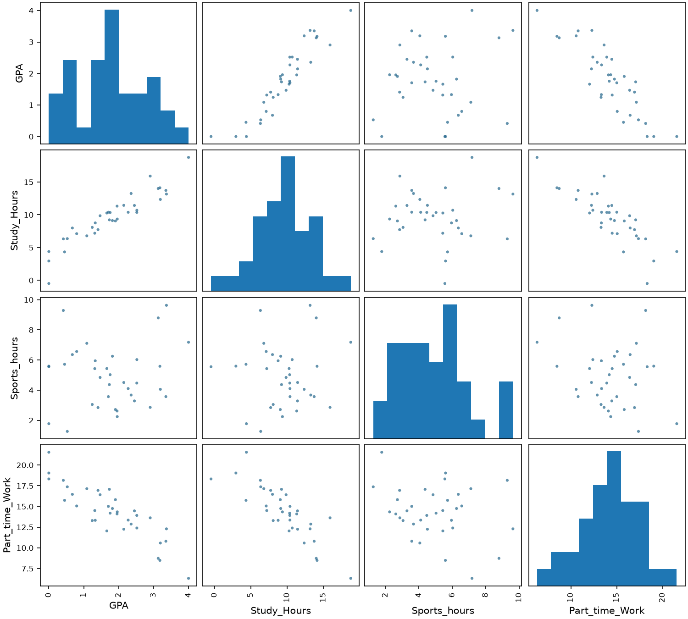

目的ごとに変数を選ぶ
モデル選択では, 目的ごとに, 候補を比べる基準と選んだ式で確かめる結果を比べました.
同じ合成 GPA データを使っても, どの変数を式に入れるかは分析の目的で変わります. 平均 GPA の差を求めるなら, どの条件をそろえて比べるかを先に決めます. 新しい学生の GPA を予測するなら, 候補の式を予測誤差で比べます. 探索では, データに見つけた関係から仮説を立てます.
合成 GPA データの準備
データは偏回帰係数とそろえる条件で生成の仕組みを述べた架空の学生 100 人の記録です.
重回帰分析と同じ multiple_regression.csv を使います.
GPA は 0〜4 点で, 勉強時間 (Study_Hours), アルバイト時間 (Part_time_Work), 運動時間 (Sports_hours) は週あたりの時間です.
Scholarship は奨学生なら True, それ以外なら False です. いずれも配布データの単位のまま使います.
CSV をダウンロードしてコードと同じフォルダに置き, そのフォルダからコードを実行してください.
先頭列には行番号が入っているので, index_col=0 で行のインデックスとして読み込みます.
import matplotlib.pyplot as plt
import pandas as pd
import seaborn as sns
import statsmodels.formula.api as smf
from sklearn.metrics import mean_squared_error
from sklearn.model_selection import KFold, train_test_split
df = pd.read_csv("multiple_regression.csv", index_col=0)
train, test = train_test_split(df, test_size=0.3, random_state=0)
print(f"Training: {len(train)}, held out: {len(test)}")Training: 70, held out: 30読み込んだ直後に最終評価用の 30 人を取り分けます. 関係の定量化, 予測, 探索は, それぞれ別の分析例として学習用の 70 人から始めます.
関係の定量化: 式を問いで決める
奨学生かどうかとアルバイト時間が同じ学生どうしで, 勉強時間が週 1 時間長い学生の平均 GPA は何点高いでしょうか. データの値を見る前に, 問いでそろえる条件から式を決めます. この場合は重回帰の係数と信頼区間で使った式になります. 合成 GPA データの準備を実行したセッションで, 学習用の 70 人に式を当てはめます.
当てはめには重回帰分析と同じく, 目的変数と説明変数の列を式の文字列で指定し, 切片は自動で入ります.
conf_int(alpha=0.05) で 95% 信頼区間を求め, 比較のためにアルバイト時間を外した式も当てはめます.
formula = "GPA ~ Scholarship + Study_Hours + Part_time_Work"
fit = smf.ols(formula, data=train).fit()
intervals = fit.conf_int(alpha=0.05)
coefficient_table = pd.DataFrame(
{"Estimate": fit.params, "Lower": intervals[0], "Upper": intervals[1]}
)
print(coefficient_table.to_string(float_format=lambda value: f"{value:.3f}"))
without_work = smf.ols("GPA ~ Scholarship + Study_Hours", data=train).fit()
print(f"Study hours without part-time work: {without_work.params['Study_Hours']:.3f}") Estimate Lower Upper
Intercept 0.836 0.194 1.479
Scholarship[T.True] 0.504 0.398 0.610
Study_Hours 0.209 0.185 0.233
Part_time_Work -0.090 -0.121 -0.060
Study hours without part-time work: 0.267奨学生区分とアルバイト時間が同じ学生どうしでは, 勉強時間が週 1 時間長い学生ほど, 平均 GPA が約 0.209 点高いと推定されます. 95% 信頼区間は 0.185〜0.233 点です. 各係数は, 推定値と信頼区間をそろえて報告します.
アルバイト時間を外した式でも, 勉強時間が週 1 時間違う学生を比べます. ただし, こちらの式でそろえる条件は奨学生区分だけで, 推定した平均 GPA の差は約 0.267 点です. P 値を基準に変数を外す手順では, 外れた変数が比較の条件からも外れます. 問いでそろえると決めた変数は, P 値の大小にかかわらず式に残します. 係数が表す比較の違いは, 偏回帰係数とそろえる条件で確かめられます.
運動時間もそろえて勉強時間と GPA の関係を比べる問いなら, 運動時間を式に含めます. 同じ式で運動時間が異なる学生を比べるときに使う係数と信頼区間は, Exercise REG-SELECTION-GPA-1で求めます. 有意でなかった係数も信頼区間とともに報告する考え方は関係の定量化にあります.
予測: 交差検証で選び, テストデータで 1 回だけ評価する
新しい学生の GPA を予測する式を, 学習用の 70 人で比べます. 式 A は関係の定量化と重回帰の係数と信頼区間で使った 3 変数の式です. 式 B は式 A に運動時間を足した式, 式 C は式 A からアルバイト時間を外した式です.
合成 GPA データの準備を実行してから, 学習用データを 14 人ずつの 5 組に分けます. 1 組を検証用とし, 他の 4 組の 56 人で係数を求めます. 検証用の組を入れ替えて 5 回予測し, 5 組の MSE の平均を交差検証の MSE (CV MSE) とします. 組の分け方はすべての候補で共通です. 各データの役割は訓練データ・検証データ・テストデータで確認できます.
formulas = {
"A": "GPA ~ Scholarship + Study_Hours + Part_time_Work",
"B": "GPA ~ Scholarship + Study_Hours + Part_time_Work + Sports_hours",
"C": "GPA ~ Scholarship + Study_Hours",
}
folds = KFold(n_splits=5, shuffle=True, random_state=0)
splits = list(folds.split(train))
scores = []
for name, formula in formulas.items():
validation_errors = []
for fit_indices, validation_indices in splits:
fitting = train.iloc[fit_indices]
validation = train.iloc[validation_indices]
fit = smf.ols(formula, data=fitting).fit()
predicted = fit.predict(validation)
validation_errors.append(mean_squared_error(validation["GPA"], predicted))
full_fit = smf.ols(formula, data=train).fit()
scores.append(
{
"Model": name,
"CV MSE": sum(validation_errors) / len(validation_errors),
"AIC": full_fit.aic,
"BIC": full_fit.bic,
},
)
scores = pd.DataFrame(scores)
print(scores.to_string(index=False, float_format=lambda value: f"{value:.5f}"))Model CV MSE AIC BIC
A 0.06265 -9.05519 -0.06121
B 0.06339 -7.09237 4.15010
C 0.08188 18.55755 25.30303KFold が返すのは行の位置なので, iloc で学習用データから行を取り出します.
AIC と BIC は, どちらも候補ごとに同じ 70 人で当てはめて計算します.
statsmodels の aic と bic はパラメータ数に誤差分散を含めません.
誤差分散を含めて p=k+2 とする情報量規準の式に比べ, AIC は 2, BIC は \log 70 小さくなります.
どの候補でも同じ値だけ小さくなるため, 候補間の差や順位は変わりません.
式 B から運動時間を外した式 A では, AIC が約 1.96, BIC が約 4.21 下がります.
このデータでは, CV MSE, AIC, BIC のいずれでも式 A が最小です. GPA の二乗誤差を測るのが目的なので, CV MSE を採用基準にします. 式を決めたら, 学習用の 70 人で係数を求め直し, テストデータの 30 人で MSE を 1 回だけ求めます.
best_name = scores.loc[scores["CV MSE"].idxmin(), "Model"]
best_fit = smf.ols(formulas[best_name], data=train).fit()
test_prediction = best_fit.predict(test)
test_mse = mean_squared_error(test["GPA"], test_prediction)
print(f"Selected model: {best_name}")
print(f"Test MSE: {test_mse:.5f}")Selected model: A
Test MSE: 0.03363式 A のテスト MSE は約 0.034 で, CV MSE の約 0.063 を下回りました (単位はいずれも GPA 点の二乗). 評価に使う学生が違い (テストは 30 人の 1 組), 係数を求めた人数も交差検証では 56 人, 最終評価では 70 人なので, 今回の大小関係だけから一般の傾向は判断できません. 式 A と B の CV MSE の差は約 0.00074 で, 式を選ぶときは表示のために丸める前の値を使います. 候補をさらに増やしたときに, 選択に使った誤差をどう読むかは 説明変数の組み合わせを交差検証で比べるで扱います.
探索: 探索用で選び, 確認用で確かめる
同じデータで選んで検定する手順で見たように, 変数を選んだデータの P 値で関係を確かめると, 残った関係が母集団にもあるのか, 選び方によって残ったのかを区別できません. 変数を選ぶために使うデータと関係を確かめるために使うデータは, 図を作る前に分けます.
GPA と関係しそうな変数をデータから探します. 合成 GPA データの準備を実行したら, 学習用の 70 人を探索用 35 人と確認用 35 人に分けます. 図を作ること, 相関を求めること, 式に入れる候補を選ぶことに使うのは探索用の 35 人です.
explore, confirm = train_test_split(train, test_size=0.5, random_state=0)
print(f"Exploration: {len(explore)}, confirmation: {len(confirm)}")Exploration: 35, confirmation: 35散布図行列と相関
まず散布図行列で, 探索用の 35 人について変数の組み合わせごとの特徴を調べます. 散布図の 1 点は学生 1 人を表します. 散布図行列では行の変数が縦軸, 列の変数が横軸です. 対角線上には各変数のヒストグラムが並びます. 奨学生区分はカテゴリなので, この図には 4 つの数値変数を使います.
numeric_columns = ["GPA", "Study_Hours", "Sports_hours", "Part_time_Work"]
fig, axes = plt.subplots(4, 4, figsize=(10, 9), layout="constrained")
pd.plotting.scatter_matrix(
explore[numeric_columns],
ax=axes,
diagonal="hist",
range_padding=0.12,
color="#23658b",
alpha=0.7,
)
plt.show()
plt.close(fig)
最上段では, 勉強時間が長い学生ほど GPA が高く, アルバイト時間が長い学生ほど GPA が低い傾向があります. 運動時間と GPA の点は, 広い範囲に散らばっています. 合成データには勉強時間が約 -0.48 時間の学生が 1 人います. 配布データの値をそのまま使います.
散布図で見た傾向を数値で比べるために, Pearson の相関係数を求めてヒートマップにします. 負の相関は青, 正の相関は赤に対応します.
correlations = explore[numeric_columns].corr()
fig, ax = plt.subplots(figsize=(8, 6), layout="constrained")
sns.heatmap(
correlations,
ax=ax,
vmin=-1,
vmax=1,
center=0,
cmap="RdBu_r",
annot=True,
fmt=".2f",
square=True,
)
ax.tick_params(axis="x", labelrotation=25)
ax.tick_params(axis="y", labelrotation=0)
plt.show()
plt.close(fig)
GPA との相関係数は, 勉強時間が 0.93, アルバイト時間が -0.87, 運動時間が 0.10 です. 勉強時間とアルバイト時間の組にも -0.83 の相関があります. 重回帰で両方の時間を入れたときは, 他方の時間をそろえた比較になります. 説明変数どうしの関係が強いときは, 多重共線性と係数の精度で見たように, 係数の精度を区間の広さで確かめます.
P 値を使った後退消去
散布図と相関係数で見た GPA との関係の強さは, 時間の種類によって異なります. 変数を外すかは P 値を使った後退消去で決めるため, 3 種類の時間と奨学生区分の 4 変数すべてを候補にし, 探索用の 35 人で切片つきの式を当てはめます. 切片を除いた係数のうち, 最も大きな P 値が 0.05 以上なら, 対応する変数を 1 つ除いて係数を求め直します. すべての P 値が 0.05 未満になるか, 候補をすべて除いた時点で止めます. この手順は ステップワイズ法のうち, 変数を順に除く後退消去です.
selected = ["Scholarship", "Study_Hours", "Part_time_Work", "Sports_hours"]
while selected:
formula = "GPA ~ " + " + ".join(selected)
fit = smf.ols(formula, data=explore).fit()
p_values = fit.pvalues.drop("Intercept")
p_values = p_values.rename({"Scholarship[T.True]": "Scholarship"})
print(p_values.to_string(float_format=lambda value: f"{value:.3g}"))
largest = p_values.idxmax()
if p_values[largest] < 0.05:
break
selected.remove(largest)
print(f"Remove: {largest}")
selected_formula = "GPA ~ " + (" + ".join(selected) if selected else "1")
print(f"Selected formula: {selected_formula}")Scholarship 1.16e-05
Study_Hours 3.13e-09
Part_time_Work 0.00121
Sports_hours 0.715
Remove: Sports_hours
Scholarship 8.49e-06
Study_Hours 6.26e-10
Part_time_Work 0.000765
Selected formula: GPA ~ Scholarship + Study_Hours + Part_time_Work奨学生区分は False が基準なので, Scholarship[T.True] の P 値を奨学生区分の P 値として使います.
drop("Intercept") で切片を除くと, 残った P 値から idxmax() が最大値を持つ変数名を返します.
その P 値が 0.05 以上なら, selected.remove(largest) で該当する変数を外します.
この標本では運動時間の P 値が 0.715 で最も大きく, 運動時間を除いた式で他の 3 変数が残りました.
候補がすべて除かれた場合の式は GPA ~ 1 で, 切片だけが残ります.
探索と確認を分ける理由を述べたとおり, 探索用データで計算した P 値は変数を選ぶために使います.
詳しくは 選んだ後の推論を参照してください.
確認用の 35 人で係数を求める
探索用の 35 人で選んだ式を固定し, 確認用の 35 人ではその式の全係数と 95% 信頼区間を求めます. 確認用のデータは変数の選択に使っていないので, 固定した式について P 値や信頼区間を計算しても, 選んだことの影響を受けません.
探索で選んだ selected_formula をそのまま smf.ols に渡し, 確認用のデータを指定して fit() で係数を求めます.
その当てはめ結果から conf_int(alpha=0.05) で信頼区間を計算します.
check = smf.ols(selected_formula, data=confirm).fit()
intervals = check.conf_int(alpha=0.05)
report = pd.DataFrame(
{
"Estimate": check.params,
"Lower": intervals[0],
"Upper": intervals[1],
"Width": intervals[1] - intervals[0],
},
)
print(report.to_string(float_format=lambda value: f"{value:.3f}")) Estimate Lower Upper Width
Intercept 0.728 0.103 1.354 1.251
Scholarship[T.True] 0.560 0.455 0.666 0.211
Study_Hours 0.226 0.203 0.249 0.046
Part_time_Work -0.096 -0.127 -0.066 0.061奨学生区分とアルバイト時間が同じ学生どうしでは, 勉強時間が週 1 時間長い学生ほど, 平均 GPA が約 0.226 点高いと推定されます. その 95% 信頼区間は 0.203〜0.249 点で, 幅は約 0.046 点です. 奨学生区分についても, 平均 GPA の差には約 0.211 点の区間幅があります.
データを分けたため, 確認に使う係数は 35 人から求めています. 推定に使う人数が減ったとき, 信頼区間の幅はどれだけ変わるでしょうか. 一般に人数が少ないと信頼区間は広くなりやすく, 実際の幅は各標本の説明変数の散らばりや残差にも左右されます. この分割で得た勉強時間の区間幅は, 問いで決めた式を 70 人で推定した区間の幅と同程度です. 探索で選んだ関係は, 独立な確認用の標本から得た区間を添えて記録し, 新しいデータでも確かめる仮説として扱います.
ほかの変数選択の手法や, 選んだ式の係数を推定する際の注意点は, その他のモデル選択の手法と選んだ後の推論で詳しく扱います.
演習
Exercise REG-SELECTION-GPA-1
運動時間が異なる学生の平均 GPA の差
奨学生区分, 勉強時間, アルバイト時間が同じ学生どうしで, 運動時間が週 1 時間違うと平均 GPA はどれだけ違うでしょうか. この問いを立ててから, 学習用の 70 人に運動時間も含む重回帰式を当てはめます. 運動時間の係数と 95% 信頼区間を報告し, 区間から差の向きについて何がいえるかを書いてください.
回答
import pandas as pd
import statsmodels.formula.api as smf
from sklearn.model_selection import train_test_split
df = pd.read_csv("multiple_regression.csv", index_col=0)
train, test = train_test_split(df, test_size=0.3, random_state=0)
formula = "GPA ~ Scholarship + Study_Hours + Part_time_Work + Sports_hours"
fit = smf.ols(formula, data=train).fit()
estimate = fit.params["Sports_hours"]
lower, upper = fit.conf_int(alpha=0.05).loc["Sports_hours"]
print(f"Sports hours: {estimate:.3f}, 95% CI [{lower:.3f}, {upper:.3f}]")Sports hours: 0.002, 95% CI [-0.023, 0.028]区間は 0 をまたぐため, このデータからは差の向きまで決められません. 運動時間の係数が答えるのは演習で先に立てた問いなので, 運動時間を式に含めて区間を報告します.
発展 (参考資料で読む)
- 回帰分析は何を行っているのか (理論)
- その他のモデル選択の手法と選んだ後の推論 (理論)
- 変数選択の結果を実験で確かめる (コード)
- 一般化線形モデルと二値の応答 (理論)
- ロジスティック回帰分析 (コード)